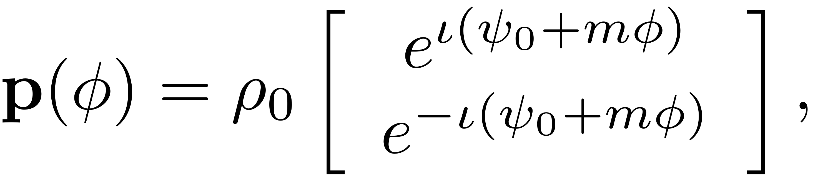

COMPUTE_OUTPUT_POLAR2D
function FRC = compute_output_polar2D(rho0,psi0,stability,epsilon,Omega,W0,W1,eta,nt, saveIC, outdof)
This function computes the periodic response in full physical coordinates from reduced polar coordintes in 2D and returns the output data structure.
FRC = COMPUTE_OUTPUT_POLAR2D(rho0,psi0,stability,epsilon,Omega,W0,W1,eta,nt, saveIC, outdof)
- rho0: reduced amplitude coordinate
- psi0: reduced angle coordinate
- stability:stability of response
- epsilon: forcing amplitude
- Omega: forcing frequency
- W0: autonomous SSM coefficients
- W1: non-autonomous SSM coefficients
- eta: leading harmonic
- nt: number of timesteps in periodic orbit
- saveIC: whether to save full system IC for periodic orbits
- outdof: DOFs at which repsonse should be computed.
- FRC: full system FRC struct
See also: EXTRACT_FRC, FRC_LEVEL_SET
FRC = struct('rho', cell(numel(rho0),1), 'psi', [], 'stability', [], ... 'Omega', [] , 'epsilon',epsilon,'Aout', [], 'Zout', [], 'Znorm', ... [], 'Zic', [], 'ZoutNorm', []); for k = 1:numel(rho0) % loop over each fixed point % periodic response in reduced complex coordinates p = polar2complex(rho0(k),psi0(k),eta,nt); % periodic response in Physical Coordinates z = reduced_to_full_traj(linspace(0,2*pi,nt),p,W0,W1,epsilon,1); % extract output [FRC(k).rho, FRC(k).psi, FRC(k).Omega, FRC(k).stability] = ... deal(rho0(k), psi0(k), Omega(k), stability(k)); [FRC(k).Zout, FRC(k).Aout, FRC(k).Znorm, ... FRC(k).ZoutNorm] = extract_output(z, outdof); if saveIC FRC(k).Zic = z(:,1)'; % record initial condition on periodic orbit end end
end function p = polar2complex(rho,psi,m,nt)
Complex coordinates: 
phi = linspace(0,2*pi,nt);
p = rho*[exp(1i*(psi + m*phi)); exp(-1i*(psi + m*phi))];
end